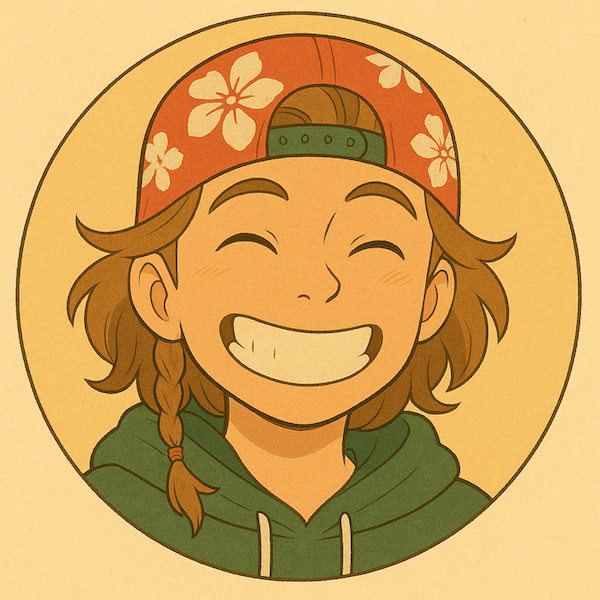

Currently a Ph.D. student at the Scripps Institution of Oceanography at UCSD. In my research thrust, I'm keen on rehabilitation of coastal reef ecosystems and exploration of deep-sea habitats. I use deep learning to analyze all sorts of underwater ambient noise and visual surveys. I use underwater acoustic playback to stimulate reef fish recruitment and coral growth.
In another life, I was in the Responsive Environments group at the MIT Media Lab and Research Engineer at NOAA's Southeast Fisheries Science Center using deep learning to understand the impact of commercial fisheries on humans & the ecosystem.
When I'm not lost in a sea of spectrograms, I like to think about ways we can make science more accessible via performance art, ways to communally gather & share blue planet stories, cli-fi (climate change sci-fi) & human adaptation.